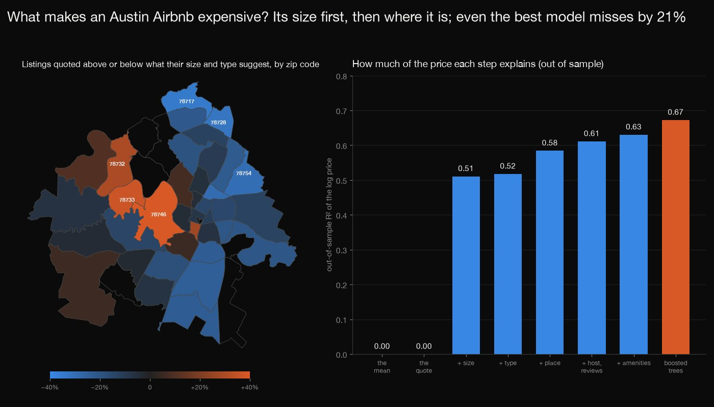
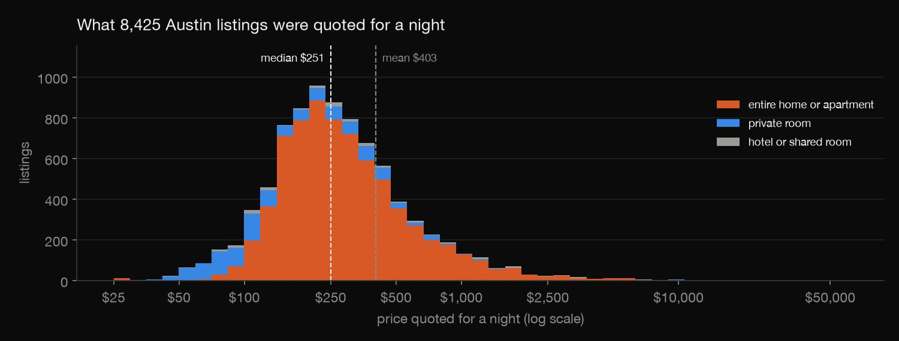
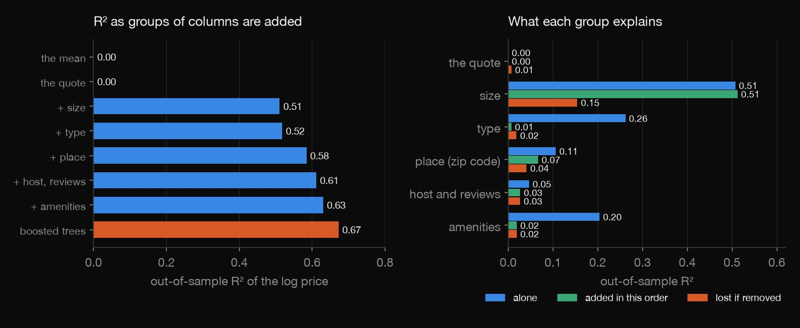
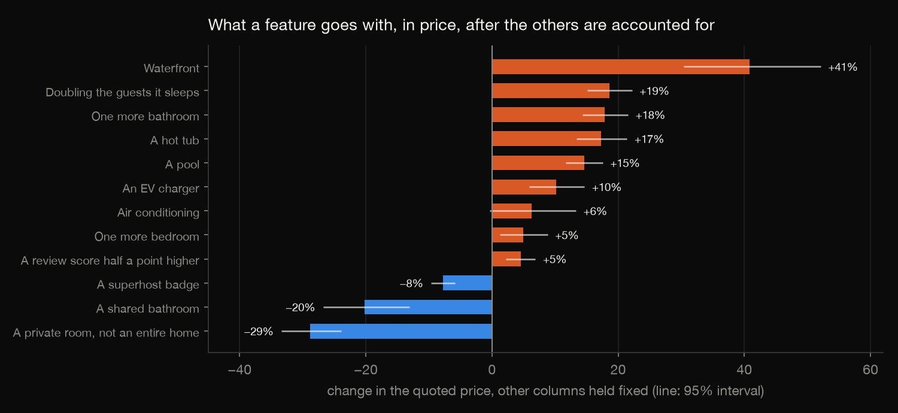
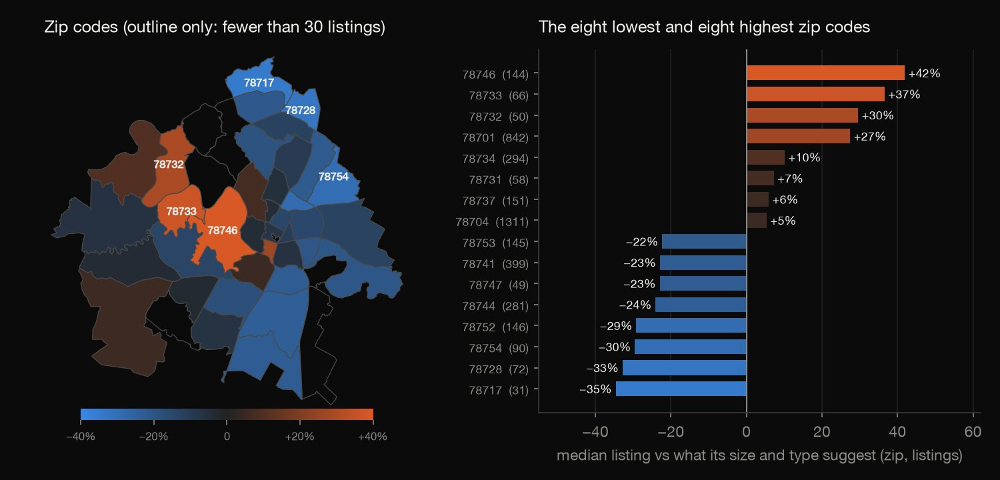
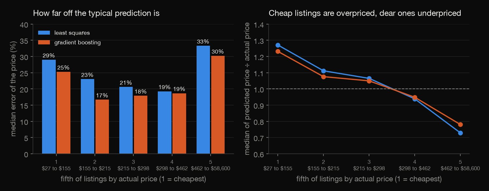

Python · Predictive modeling · 2026-10
What Makes an Austin Airbnb Expensive?
Cross-validated by host: the size of a listing alone explains half of the variation in what Austin Airbnbs are quoted for a night (R² 0.51), the best model reaches 0.67 and still misses by a median 21%, and a split by listing instead of host would have flattered it to 0.77.

The price is one quote for a stay of 1 to 7 nights, a median 3 days after the scrape, not an annual price; only short minimum stays are modelled (8,425 listings). The effects are associations, not causes. Folds are made of hosts, but different hosts in one building can still leak into the boosted model, whose settings were fixed, not tuned. Locations are anonymised to within 150 metres. Data: Inside Airbnb, CC BY 4.0.
01 — The problem
Talk of what drives an Airbnb's price lists the usual suspects: bedrooms, location, reviews, a pool. How much of a listing's price do they really explain, on listings the model has never seen, and what is left?
The task follows GeeksforGeeks' "Airbnb Data Analysis" (explore the listings, visualise them, model the price). The data is Inside Airbnb's real Austin file of June 2026, not a course file.
02 — What I built
One file of listings, questioned out of sample:
- The quote: what the price is, and the sample of short-stay listings.
- Six groups of columns: the quote, size, type, place, host and reviews, and amenities.
- The models: least squares and boosted trees, scored with folds made of hosts and, for contrast, of listings.
- The attribution: each group alone, added in order and removed.
- Check:
check.pyrecounts it in plain Python: 658 numbers.
03 — How it was built
- 01
Download the files
Inside Airbnb's Austin files of 22 June 2026: the listings (gzipped CSV, 90 columns) and the zip-code neighbourhoods (CSV and GeoJSON outlines). None is committed (about 8 MB); the script keeps their checksums. Host names, titles and descriptions are never used.
BASE = "https://data.insideairbnb.com/united-states/tx/austin/2026-06-22/" - 02
Choose the sample
The price is text ("$1,234.56") and becomes a number. A listing is in if it has a price, a minimum stay under 30 nights and a quote for a stay of 1 to 7 nights: 8,425 of 11,295. Bathrooms are read from their text where the number is blank (707 of 712); other missing numbers become the sample median, with a flag.
S = L[L["p"].notna() & (L["minimum_nights"] < 30) & q1].reset_index(drop=True) - 03
Build six groups of columns
The quote (nights, days to check-in, weekday), size, type, place (the zip code), host and reviews, and amenities: how many, and twelve picked in advance by text rules, such as the pool rule below, which ignores a pool table and a pool view. 89 columns in all.
("pool", r"\bpool\b(?! table| view)") - 04
Score out of sample, by host
Five-fold cross-validation with folds made of hosts, so a host's other listings never help predict a listing; folds made of listings for contrast. Least squares on the log price, with the groups added one at a time, alone and removed from the full model, and a boosted-tree model given the same columns plus latitude and longitude.
fold_h = (S["host_id"].astype("int64") % 5).to_numpy(); fold_l = (S["id"].astype("int64") % 5).to_numpy() - 05
Recompute it by hand
check.pyrebuilds every column, fits every least-squares model by solving the normal equations in plain Python, and recomputes every score, coefficient and robust error. Only the boosted model's fit is scikit-learn's, on the matrix check.py built by hand.tmp = [[sum(inv[i][c] * meat[c][j] for c in range(k)) for j in range(k)] for i in range(k)]; se = [math.sqrt(n / (n - k) * sum(tmp[i][c] * inv[c][i] for c in range(k))) for i in range(k)]
04 — Results

What is quoted. The price is not a list price: Airbnb was asked for a quote for one particular stay, here 3 days after the scrape at the median, and the price is the total divided by the nights. The median is $251 a night and the mean $403; the top 1% start at $2,804 and the highest is $58,600.50. The median for entire homes is $263 and for private rooms $129.
| Group | Alone | Added | Lost |
|---|---|---|---|
| The quote | 0.00 | 0.00 | 0.01 |
| Size | 0.51 | 0.51 | 0.15 |
| Type | 0.26 | 0.01 | 0.02 |
| Place | 0.11 | 0.07 | 0.04 |
| Host and reviews | 0.05 | 0.03 | 0.03 |
| Amenities | 0.20 | 0.02 | 0.02 |

Size first, and order matters. Alone, the quote (nights, weekday, days ahead) explains none of the variation in the log price. Size explains 0.51, and adding the groups one at a time takes the cross-validated R² to 0.63; the boosted model reaches 0.67. "Alone" is the R² of a group by itself, "added" its increase when it joins in this order, "lost" the fall if it is removed from the full model. Removing size costs only 0.15, because type, amenities and the rest stand in for it: type alone explains 0.26 and adds 0.01 after size; amenities alone 0.20 and add 0.02. Place is the one group that adds a lot after size (0.07).

What a feature goes with. From the full least-squares fit on every row, with 95% intervals from errors robust to non-constant variance; an association with the other columns held fixed, not a cause. Doubling the guests a listing sleeps goes with +19% (+15% to +22%); one more bathroom +18% (+14% to +22%); one more bedroom +5% (+1% to +9%); a private room instead of an entire home −29% (−33% to −24%); a shared bathroom −20% (−27% to −13%). Waterfront +41% (+30% to +52%); a hot tub +17% (+13% to +21%); a pool +15% (+12% to +18%); air conditioning +6% (−0.4% to +13%). A superhost badge goes with −8% (−10% to −6%) and a review score half a point higher with +5% (+2% to +7%).

Place. Against what its size and type suggest, the median listing is quoted furthest above in zip codes 78746 (+42%, 144 listings), 78733 (+37%, 66 listings), 78732 (+30%, 50 listings), 78701 (+27%, 842 listings), and furthest below in 78717 (−35%, 31 listings), 78728 (−33%, 72 listings), 78754 (−30%, 90 listings), 78752 (−29%, 146 listings) (zip codes with at least 30 sample listings; out of fold, before the zip code is used).
| Folds made of | R² | Error | ±25% |
|---|---|---|---|
| Linear, hosts | 0.63 | 24% | 52% |
| Boosted, hosts | 0.67 | 21% | 57% |
| Linear, listings | 0.66 | 23% | 53% |
| Boosted, listings | 0.77 | 17% | 66% |

How far off. Out of sample, with folds made of hosts, the full least-squares model misses by a median 24% and has 52% of listings within 25% of the price; the boosted model misses by 21% and has 57%. Both overprice the cheapest fifth of listings (the median prediction is 1.27 times the price for least squares) and underprice the dearest (0.73), which is also the hardest to predict (median error 33%).
A naive split flatters the model. 5,268 of the 8,425 listings (62.5%) belong to a host with another listing in the sample (one host has 178). With folds made of listings the boosted model scores R² 0.77 and misses by a median 17%, against 0.67 and 21% by host: the difference is what a model gains from having seen the same host's other listings.
05 — What I'd do next
- Group the folds by building as well as by host (cluster listings by coordinates) and see how far the boosted model's score falls.
- Use the calendar file to quote the same listings for many dates, to separate a listing's level from the season.
- Fit least squares with interactions of size, type and place, to see how much of the boosted model's gain a hand-built linear model recovers.